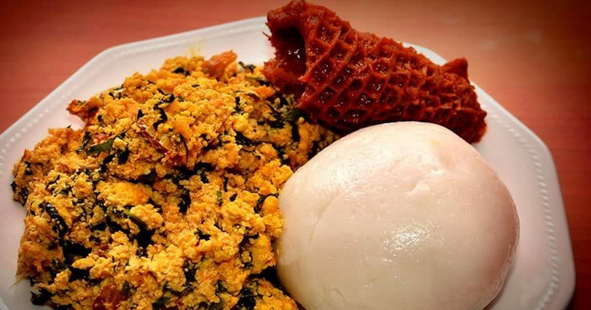

Pounded Yam(Iyan) Recipe

Description
Pounded yam is a traditional West African dish made from the yam, a root vegetable.
The yam is peeled and boiled until it becomes soft, and then it is pounded in a mortar and pestle or with a
machine called a "pounding machine" to make it smooth and pliable.
The result is a starchy, slightly sweet dough-like substance that can be formed into various shapes and served with a variety of stews, soups, and sauces.
It is popular in countries such as Nigeria, Ghana, Togo, and Sierra Leone.
Ingredients
- Boiled yam
- Hot and cold water
- A A whole lot of energy
Steps
- Peel the skin off the yam and then slice.
- Put them in the pot and boil till soft, add enough water so as the water
in the yam won’t dry up because you will need it while pounding.
- Scoop the hot yams into a mortar and pound with the pestle, if the yam that
you are pounding gets stiff add some of the water used in cooking the yam into the mortar and keep pounding.
- Pound the yam until it has a stretchy consistency and doesn’t stick when touched.
- Scoop your pounded yam in a plate.
- Serve with any Nigeria Soups.